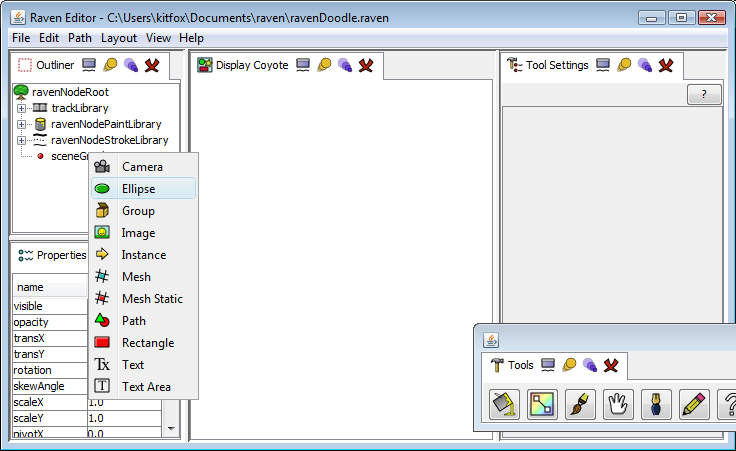
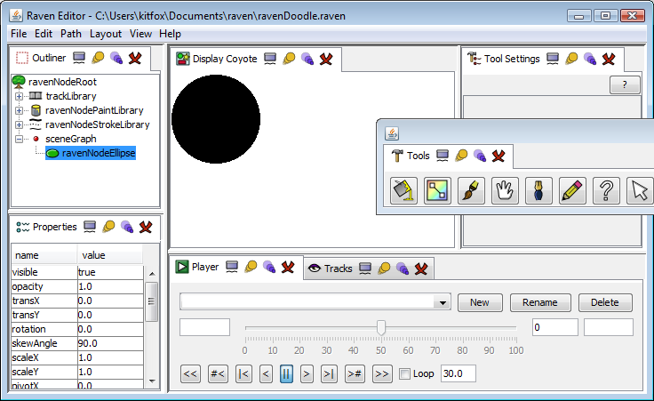
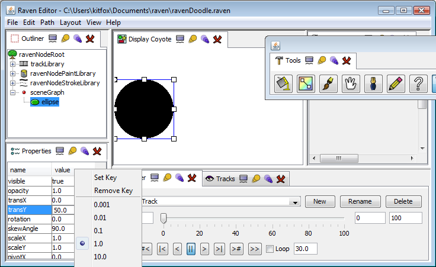
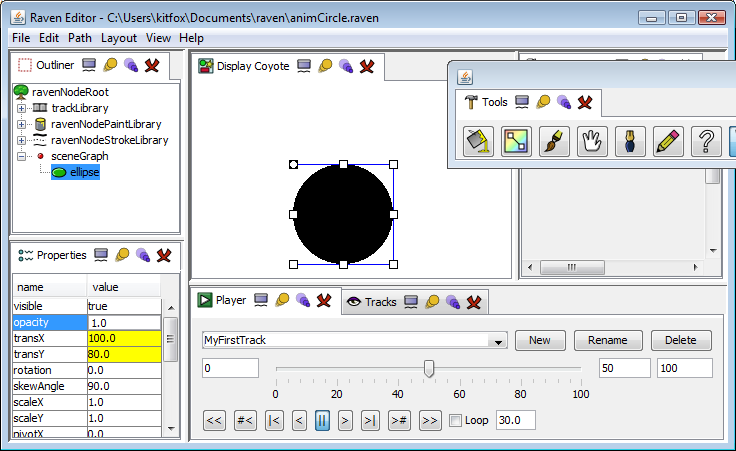
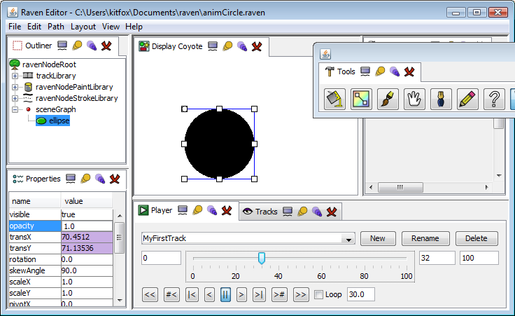
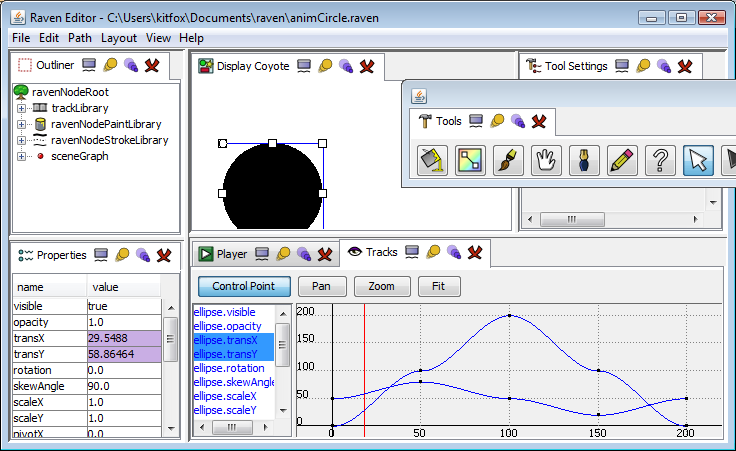
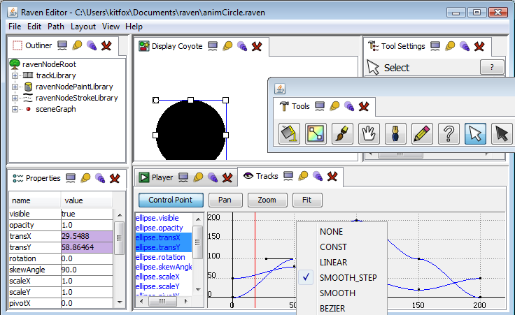
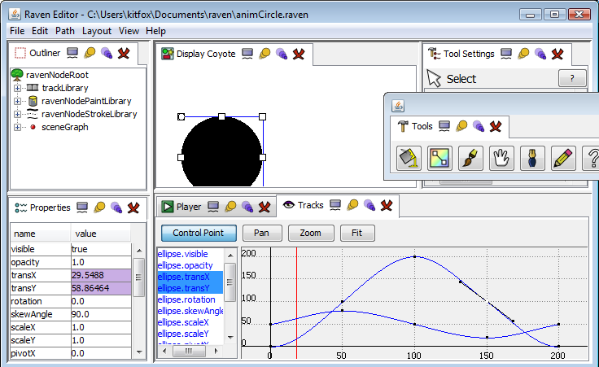

Key Driven Animation
Create a new Raven File
Start Raven Studio. Create a new project by selecting File/New... from the main menu.
Right click on the 'scenegraph' node in the Outliner window. The node option menu will appear, which will allow you to create new children of this node. Some nodes will also have additional menu options that allow you to modify it.

Select the option for Ellipse. A black circle will appear in the Display window and a new node will appear in the Outliner called 'ravenNodeEllipse'.
Triple click on the new node in the Outliner and the renaming tool will appear. Rename it to something shorter, like 'Ellipse'.
Set up your layout
You will now need to prepare your workspace for animation. Open the Player and Tracks windows from the View menu and rearrange your workspace to look like this:

Setting Properties
Take a look at the properties window. It displays all of the animatable properties of the currently selected object. You can select objects by clicking on them in the Outliner. You can also use the Select tool (looks like a white arrow) in the Display area to do the same thing.
You can edit the values of node properties directly by typing new values into the property window.
Find the transX property. Change its value from 0.0 to 100.0 and press enter. The black circle will move 100 units to the right.
You can scrub the value of numerical properties by positioning the mouse over the property you want to change, holding down the middle mouse button and dragging the mouse. This can provide a convenient way to quickly nudge a property into position.
Now select the Select tool from the Tools view (it looks like a white arrow). Click on the middle of the black circle - a box with some handles will appear. You can move the circle by clicking and dragging on it. You can resize and rotate it by clicking on one of the handles and dragging.
Now restore all these properties by setting transX, transY, rotation, pivotX and pivotY to 0, scaleX and scaleY to 1 and skewAngle to 90. You can also do this by pressing ctrl-Z enough times to undo all the changes you've made.
Creating a track
Next, you will need to create a new track. Do this by pressing the New button in the Player view. Give it a name such as 'MyFirstTrack' and press OK. You are now set up to start animating.
Setting Keys
Every property of every node is built to handle multiple values. One of these is the 'direct value', which is the value that appears in the Property view and is useful for editing. Each property can also store multiple 'key values'. A property can have at most one key value per track/key frame pair. It is these key nodes that constitute the animation.
In the example above, the Ellipse node has a property called transX. The project has also contains the track we added called 'MyFirstTrack'. So for the track MyFirstTrack, transX could store one key value at frame 0, another at frame 1, frame 2, and so on. By changing the value of the property slightly from frame to frame, the illusion of motion is created.
We will start by creating an initial key frame to begin our animation. Make sure the Player has the current frame set to 0. Next set the transY property of the Ellipse to 50. (You can also select and drag it into place using the Select tool, if you wish).
Now click in the transY property value area as if you were going to edit it. Then right click to bring up the property menu.

Click on Set Key to set a new key at frame 0 of track MyFirstTrack. Also set a key on transX using its current property value. You will notice that the background of the property will have changed to yellow to indicate that a key is set at the current frame in the current track.
(The drop down menu that appears will also allow you to remove already set keys. Numerical properties will provide an additional list of values - these allow you to adjust the resolution that is used when using the middle mouse button to scrub through property values).
Next change the current frame to 50. This can be done by clicking and dragging the slider in the Player view or by typing 50 into the Current Frame box in the same window. Set transX to 100 and transY to 80. Set keys on both properties.

Now change the current frame to 100 and set transX to 200 and transY to 50. Key both these values.
Testing Playback
Now that we've set three keys, we can use the animation engine of Raven to blend between them. Click on the slider arrow in the Player view and move it to a different place in the timeline. As you move the arrow, the Display will update to show the animation at this point in time.
The properties window will also update to show the current value of the properties at the current frame. You will also notice that the background of the transX and transY properties are now mostly purple, with a few flashes of yellow. The yellow backgrounds indicate places where key frames are set, and purple indicates interpolated values calculated by Raven.

Click the 'loop' checkbox and press the 'Play Forward' button in the player (has a '>' symbol). Your animation will now be played. You can stop playback by pressing the 'Pause' button (has a '||' symbol).
Understanding Property states
Animated properties can take some getting used to. If a property is key framed (yellow background) or interpolated (purple background) at a particular time, you can still edit it in the Property view. However, if you then change the current frame to something else, that value will be lost. This is because when you edit the property in this view, you are setting the 'direct value'. When you navigate to another part of the timeline, you overwrite the direct value with the animation value at that particular time. If you want to keep the change you made, you will have to Set Key to copy the direct value into the key values of the track.
Properties may also not be animated in some frames, in which case they will have a white background. If you scrub the timeline to a frame that is unanimated, the direct value of the property will not be changed.
Extending our Animation
It would be nice if we could have the circle travel all the way back to its starting point instead of stopping abruptly at the far end of the display window. To do this, we will need extra frames to work with. In the Player view, change the value of Last Frame from 100 to 200.
Set the current frame to 150. Set transX to 100 and transY to 20. Set keys on both.
Finally, set the current frame to 200, transX to 0 and transY to 50. Set keys once more. Now press Play Forward and watch our ellipse travel in a complete circle.
Adjusting Animation Curves
While our animation now travels in a complete circle, it does seem to slow down when the circle gets close to our key frames and speed up when traveling between them. It would be nice if we could smooth this out. Well, we can using the Tracks view.

Switch to the tracks view. Make sure the Ellipse is selected and then select the ellipse.transX and ellipse.transY properties in the list box on the left. Next click the Fit button to see the animated curves of these tracks in the graph area. The black dots represent the track key frames, and the blue lines represent the interpolated regions.
Click on Control Point in the Tracks view to switch to the Control Point editing tool. Click on one of the black dots in the grid area. It will turn white and two handles will appear indicating the slope of the curve at that point. If you right click, a drop down menu will appear indicating the type of interpolation that occurs at that key.

We need to change the interpolation type of all keys to Smooth. Click and drag a marquis in the grid area to select all key control points. Then right click on one of them and select Smooth from the drop down menu. The keys will not visibly change, but they have all been converted to smooth control points.
Now that the points are smooth, it is possible to change their slope. Click and drag on the black tangent handles of the intermediate keys so that the curve is smoothed out. When you're done, the graph should look something like this:

Finally, switch back to the Player view. When you play back the animation this time, it will be much smoother.